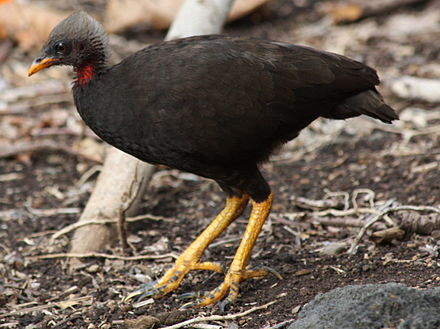
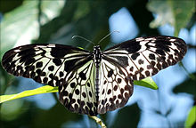
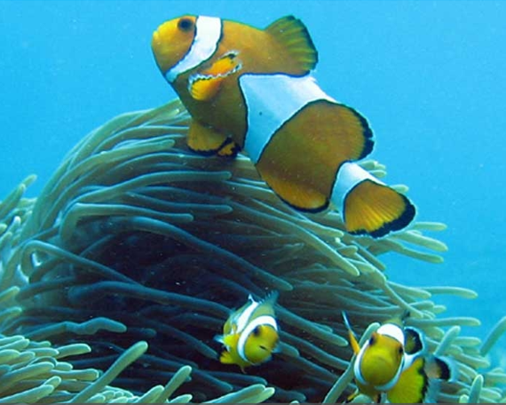

Location : Great Nicobar Island, the largest Nicobar Island in the eastern Indian Ocean.
Established in : 1992
Area : 426.23 km2 Flora : Tree ferns and orchids are in abundance here.
Fauna : Crab-eating macaque, megapode, giant robber crab, Nicobar pigeon, Olive ridley turtles,
leatherback turtles, wild boar, deer and civet cats.
Climate : Warm and humid
Features : It forms part of the Great Nicobar Biosphere Reserve and is separated from Galathea
National Park by a forest buffer zone 12 km in width.
Campbell Bay National Park
Olive ridley turtle
Galathea National Park
Location : Great Nicobar Islands in the eastern Indian Ocean or Bay of Bengal.
Established in : 1992
Area : 110 km2 Flora : Tropical and subtropical moist broadleaf forests
Fauna : Giant robber crab, Nicobar pigeon and megapode
Climate : Acute tropical with no winter conditions and only summer season and monsoons, with an
average of 3000 to 3800 mm rain per m2 Features : It is a part of the Great Nicobar Biosphere Reserve and separated from Campbell National
Park by a forest buffer zone 12 km in width.
Galathea National Park
Nicobar Pigeon
Giant robber crab

Megapode
Mahatma Gandhi Marine National Park
Location : Near Wandoor on the Andaman Islands. It belongs to administrative district of South
Andaman.
Established on : 24th May 1983
Area : 281.5 km2 Flora : Moist Deciduous forests
Fauna : Sea turtles, Coral reefs, primarily fringing reefs
Features : The park consists of two major groups pf islands : the Labyrinth Islands and the
Twin Islands. These are situated 16 km to the south of Port Blair.
Mahatma Gandhi Marine National Park
Sea turtle
Middle Button Island National Park
Location : About 200 km northeast of Port Blair in Andaman and Nicobar Islands
Established in : 1979
Area : 64 km2 Climate : Oceanic climate moderated by surrounding sea, with an average temperature of 20-30 °C.
There is much rain between June and October.
Flora : Moist deciduous forests. Some of the trees and shrubs are the rattan palm, the climbing
bamboo, etc.
Fauna : Spotted deer, monitor lizards, and water lizards. Marine fauna found include dolphins,
dugongs, sea turtles, fish, blue whales, corals, etc.
Features : Forms part of Rani Jhansi Marine National Park off the South Andaman Island coast.
Middle Button Island National Park
Dolphins
Mount Harriet National Park
Location : Indian union territory of Andaman and Nicobar Islands
Established in : 1969
Area : 4.62 km2 Flora : Evergreen primary forests, mixed deciduous - a combination of primary and secondary forests.
The three types of forests are tropical evergreen, hilltop tropical evergreen and littoral. 134 species of plants and
trees have been found, inculding 51 introduced and 74 native species.
Fauna : Endangered Andaman wild pigs, turtles, saltwater crocodiles, butterflies, robber crabs,
Andaman wood pigeon, Andaman cuckoo-dove, Andaman scops-owl, Andaman woodpecker, Andaman drongo, Andaman boobook,
Andaman treepie, etc. There are 28 reptile species including mostly snakes and lizards. Introduced species are
the Asian elephant, feral and chital. The aquatic fauna also include eel, gobies, catfish, snakeheads and sleepers.
There are six species of amphibian and molluscs.
Features : Mount Harriet is the third-highest peak (383 m) in the Andaman and Nicobar Islands.
The picture at the back of Rs. 20 note is taken from this national park.
Mount Harriet National Park

Butterfly
Andaman wood pigeon
North Button Island National Park
Location : Andaman district, 16 km away from the nearest town of Long Island
Established in : 1979
Area : 114 km2 Flora : Deciduous forests
Fauna : Dugong, dolphin, water monitor, lizards, etc.
ClimateTropical, warm and humid
Features : It beongs to the Button Islands. Favourable time to visit is from December to March.
North Button Island National Park

Marine life
Rani Jhansi Marine National Park
Location : About 30 km from Port Blair, in Bay of Bengal
Established in : 1996
Area : 256 km2 Flora : Mangrove forests
Fauna : Coral reefs, fruit-eating bat
Features : Commemorates Lakshmibai, the Rani of Jhansi (1828-58)
Rani Jhansi National Park
Coral reefs
Saddle Peak National Park
Established in : 1979
Area : 32.54 km2 Flora : Moist, tropical vegetation and deciduous evergreen forest.
Fauna : Andaman wild pig, Andaman imperial pigeon, Andaman hill myna, water monitor, dolphins, whales
and saltwater crocodile.
Climate : Oceanic with usual temperature between 20-30 °C. Rainy season from June to October.
Saddle Peak National Park
Saltwater crocodile
Water monitor
Andaman hill myna
South Button Island National Park
Location : About 24 km south-west of Havelock Island, part of Rani Jhansi Marine National Park
Established in :1987
Area : 5 km2 Flora : Rattan palm, climbing bamboo, etc.
Fauna : White-bellied sea eagle, dugongs, water lizards, sea turtles, dolphins and blue whales. The other fish include lion
fish, snappers, sweetlips, angel fish, devil rays, manta rays, butterflyfish and barracuda, along with octopuses,
shrimps and nudibranchs
Climate : Oceanic climate moderated by the surrounding sea. Average temperature lies between 20-30
°C. Rainy season occurs between June and October